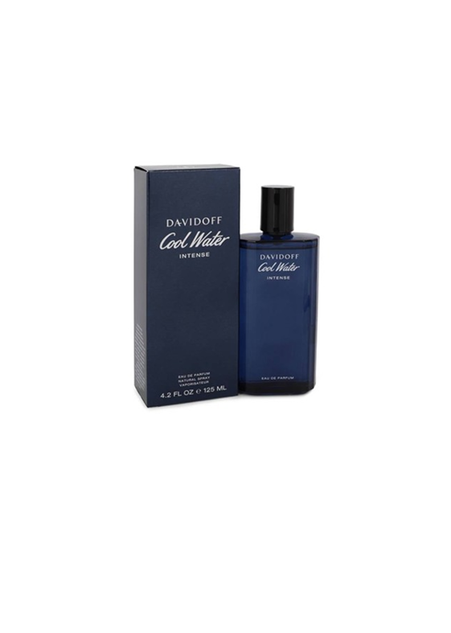

|

|
/Parfum
200k
Discover the Intense freshness from the sea. Davidoff revisited
Cool Water freshness with an ethically sourced ingredient : the green
mandarin. This handpicked citrus was harvested by a community in the
Vale Do Caí in Brazil. The scent unfolds into oriental notes of coconut water
blended with the sensuality of amber accord. Your ultimate call of
freshness, hedonism and seduction.
33 Ulasan
78 Terjual
|